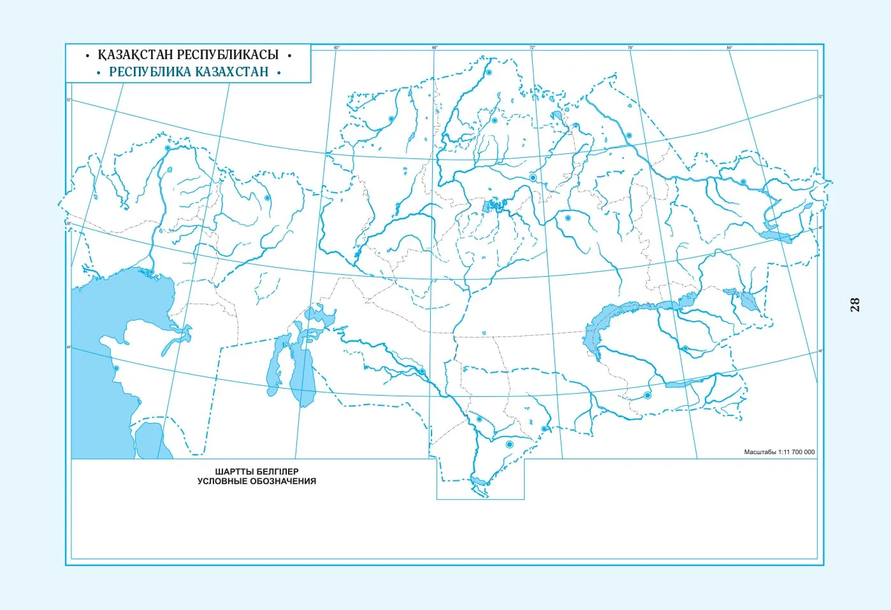
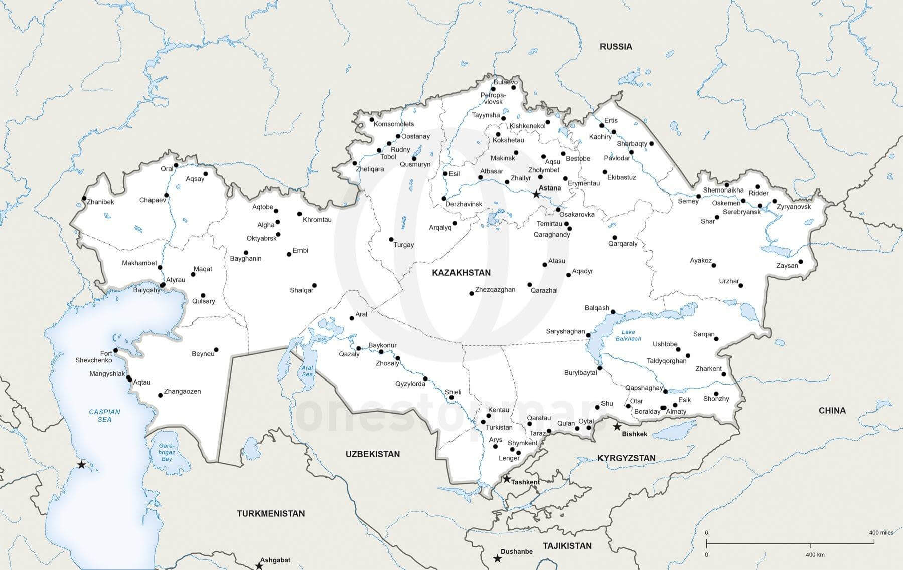
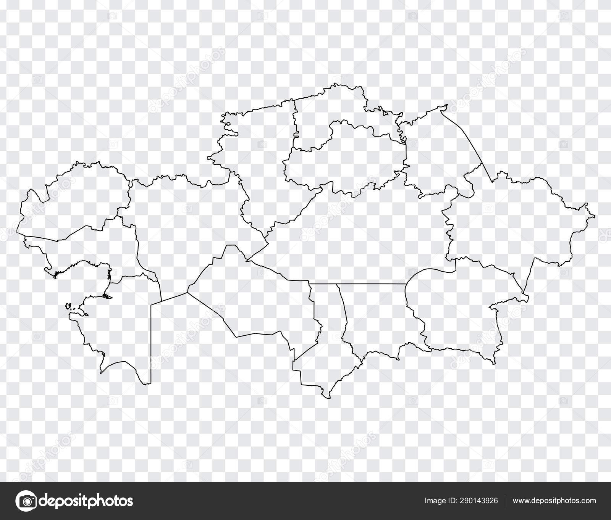

100 УДИВИТЕЛЬНЫХ ФАКТОВ
**RU:** Землю называют "голубой планетой" не просто так. Океаны доминируют над сушей, занимая $71\%$ площади.
**KZ:** Жерді "көк планета" деп бекер айтпайды. Мұхиттар құрлықтан басым, алаңның $71\%$ алады.
**EN:** Earth is called the "Blue Planet" for a reason. Oceans dominate the landmass, covering $71\%$ of the surface area.
Все 100 фактов заполнены. Выберите язык для просмотра.



